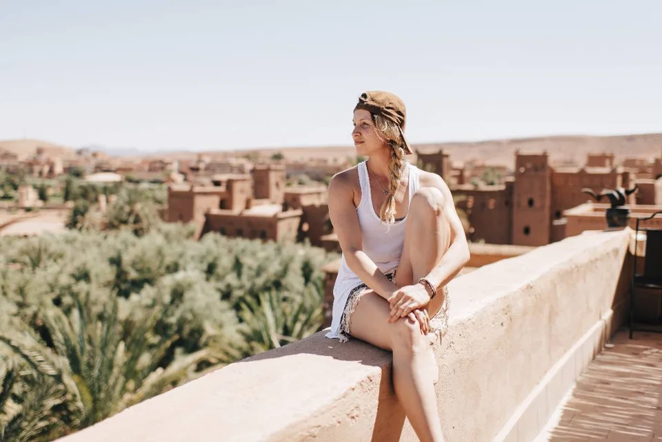

Trip planning · MOROCCO EXPLORER TOURS
Finding Your Morocco: Choose an Itinerary That Fits
A good Morocco itinerary begins with the time you actually have, rather than a list of every place you have heard about. Cities, mountain valleys and the Sahara offer different experiences. The right route leaves room to enjoy them.

Count usable days, then choose your starting point
Put your arrival and departure times on the calendar before choosing a tour. A late landing is not a sightseeing day, and an early flight usually means staying near your departure city the night before. Separate full travel days from those partial days when comparing routes.
Marrakech works well for a journey through the High Atlas and southern valleys. Casablanca can suit a wider circuit connecting imperial cities with the desert. Finishing in a different city can reduce backtracking, but compare the flight arrangements before committing to an open-ended route.
Pick two priorities instead of five
Think about the moments you want most: a guided medina walk, a night near the dunes, village visits, food workshops or time by the ocean. Choose two anchors and let the remaining stops connect them. A route built around food and architecture will feel different from one built around mountain landscapes.
With five or six days, concentrate on one region or a focused crossing. Seven or eight days can combine several places, although a desert itinerary still needs substantial driving time. Ten to sixteen days give more scope for a circuit and extra nights in the places that interest you.
Look at overnight stops, not just the map
Ask where you sleep each night and which days are mainly spent on the road. A line between Marrakech and Merzouga crosses mountains and valleys; it is not a short city transfer. If every day changes hotel, you may spend more time packing than exploring.
Adding a second night in a city or valley makes space for an unhurried walk, a cooking session or simply a morning without a departure deadline. Families and travellers who dislike frequent transfers should make this a priority when discussing the plan.
Choose comfort and activities separately
An attractive hotel does not automatically make a fast route comfortable. Review the driving pace as well as accommodation. For a desert stay, ask about the tent, bathroom arrangement, camp location and transfer method. Confirm which guides, meals, activities and entrance fees belong to the quoted package.
Share any walking limitations and preferences before booking. You can enjoy a landscape without doing every optional hike or camel ride. A useful proposal explains what is planned, what is optional and where the route can change.
Turn your shortlist into a practical brief
Write down your travel dates, arrival and departure cities, group size, two priorities and your preferred pace. Add any places you would happily skip. These details make it easier to shape a route that fits your holiday instead of squeezing your holiday into a fixed schedule.
Add a day in the Atlas
Whatever your itinerary, one day in Imlil is enough to discover the villages and peaks of the High Atlas, 1 h 30 from Marrakech.